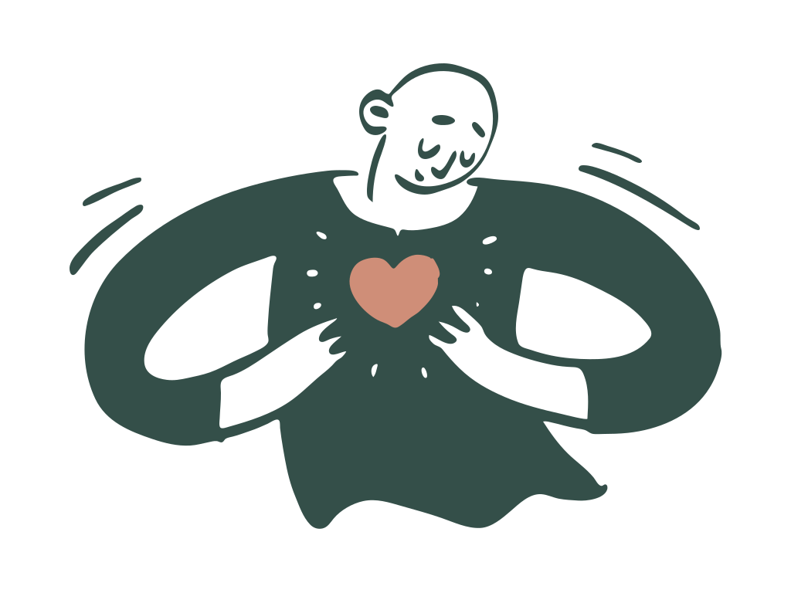

换一个角度，再看一次
同一件事，也可以有新的理解。
虚构案例：一次练习被记录为漏了两项步骤。点击三步，看看补充信息如何改变暂时判断。
01 / 事实
先记录发生了什么
等待记录示例事实
02 / 暂时判断
留出可以复核的空间
完成事实记录后，再看暂时判断
03 / 补充与修订
多一点信息，多一种理解
补充信息后，在这里看修订结果
查看完整复核记录
- 等待开始；练习不评价任何真实个人。

本页仅为虚构案例演示，不是求助受理入口。所有选择只在当前页面保留。
01 / 心盾 · 评价校准
从四个小问题开始，
给此刻的判断，多一点背景。
请选择虚构答案，体验不同提示。
换一个角度，再看一次
虚构案例：一次练习被记录为漏了两项步骤。点击三步，看看补充信息如何改变暂时判断。
等待记录示例事实
完成事实记录后，再看暂时判断
补充信息后，在这里看修订结果
02 / 心桥 · 关怀协作
从发起到跟进，沿着这条线，
看清每一步和下一位负责人。
现在走到这里
模拟操作不会发送消息，也不连接真实服务。
手动切换角色，观察不同职责。
角色切换用于讲解，不代表真实身份认证或权限控制。
当前视角
固定示例不随上方交互任务变化。
03 / 你的体验，也很重要
记录哪里清楚，哪里需要改进。
草稿留在这里，由你决定是否分享。
仅使用固定选项，不填写姓名或健康信息。草稿不会自动提交。
草稿由你核对后手动提交。提交 Issue 会公开你的 GitHub 账号与提交内容。 提交体验反馈 ↗
保持清晰，也保持温柔
不输入真实学生、学校或健康记录；刷新和重置会清除页面状态。
示例规则没有临床效度，不用于健康判断、成绩、排名或奖惩。
当前没有后台或真实消息服务。实际使用前仍需完善责任、授权与安全设计。